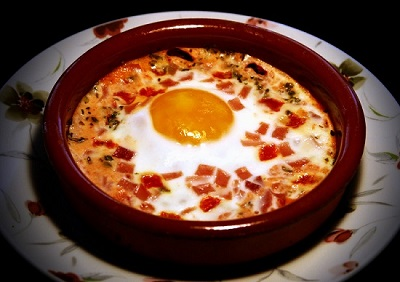

Huevos al plato
Ingredientes: 8 huevos, 2 higadillos de ave, 50g de pate, 4 rebanadas de pan de molde, 1 vasito de aceite, 20g de mantequilla, 1 copa de jerez, sal.
Dificultad:Media
Tiempo:45 minutos
Nivel calorico:Medio
Qué son unos huevos al plato?
Los huevos al plato son unos huevos al horno con añadido de vegetales o embutidos, de los que existen formas posibles de cocinarlos. Tradicionalmente, este plato se presenta en formato individual, sobre una cazuela de cerámica o barro refractario.
También se pueden enriquecer con embutido, carne picada, restos de cocido o de carnes asadas, una boloñesa o dados de beicon, panceta o jamón cocido. Se admiten también perfectamente versiones con pescado o marisco, siendo para ello muy prácticas también las conservas o el formato ya cocido, y quesos o una base de nata o bechamel espesa.
Preparación
Untamos con aceite los cuatro platos de barro o cazuelas, que puedan ir al horno. Separamos las claras de las yemas de los huevos. Ponemos el pan de en los platitos untados de aceite o mantequilla y sobre el pan las claras repartimos trocitos de los higadillos y paté.
Precalentamos el horno a 180º. Cuando llegue a la temperatura, horneamos los cuatro platos de barro o cazuelas por 8 minutos. Las sacamos del horno, ponemos las yemas sobre ellas que se nos romperán por efecto del calor, echamos un chorrito de jerez y horneamos 2 minutos más. Sacamos y añadimos sal al gusto. Servir enseguida.
